Spring MVC SSE 아키텍처/컨벤션/사용설명서¶
1) SSE 개요¶
1.1 SSE 정의¶
-
서버가 클라이언트로 단방향 스트리밍을 하는 HTTP 연결
-
클라이언트는
EventSource로 연결하고, 서버는 이벤트를 지속 전송
1.2 MVC에서의 구현¶
-
Spring MVC는
SseEmitter로 SSE를 제공(서블릿 비동기) -
연결 생성 시
SseEmitter를 반환하고, 서버에서 필요할 때emitter.send(...)
1.3 이벤트 구성¶
-
event: 이벤트 이름 (예:connected,message,ping) -
id: 이벤트 ID (재연결/추적용) -
data: payload(JSON)
2) 아키텍처 설계¶

2.1 레이어별 책임¶
API 레이어¶
-
SSE 구독 엔드포인트 제공
-
SSE 연결(Emitter) 저장/정리/브로드캐스트 수행 (Hub)
-
SERVICE가 발행한 도메인 이벤트를 수신하여 Hub에 전달 (EventListener)
-
세션/쿠키 인증을 통해 사용자 식별(예:
@AuthenticationPrincipal)
SERVICE 레이어¶
-
비즈니스 로직 처리(권한/검증/저장 등)
-
처리 결과를 바탕으로 도메인 이벤트 발행 (
ApplicationEventPublisher) -
API(Hub)를 직접 참조하지 않음
DATA 레이어¶
-
Entity/Repository
-
메시지 저장, 조회 등 영속성 담당
2.2 전체 흐름 (채널 분리, 디스코드 방식)¶
채팅 전송 (클라이언트 → 서버)¶
-
클라이언트가
POST /channels/{channelId}/messages -
API Controller가 SERVICE 호출
-
SERVICE가 검증/저장 후
ChatMessageCreatedEvent발행 -
API EventListener가 이벤트 수신
-
Hub가 해당 채널에 구독 중인 클라이언트들에게 SSE 전송
채팅 수신 (서버 → 클라이언트)¶
-
클라이언트가
GET /channels/{channelId}/stream구독 -
Hub가
(channelId, clientKey)로 Emitter 등록 -
이벤트 발생 시 Hub가 채널 단위로 브로드캐스트
3) 컨벤션¶
3.1 Endpoint¶
-
구독:
GET /api/v1/channels/{channelId}/stream -
전송:
POST /api/v1/channels/{channelId}/messages
3.2 SSE 이벤트 이름¶
-
connected: 구독 직후 1회 전송 -
message: 채팅 메시지 -
ping: keep-alive
3.3 ClientKey 규칙¶
-
동일 유저 다중 탭/디바이스 고려
-
clientKey = userId + ":" + connectionId형태 -
connectionId는 UUID 등으로 생성(프론트에서 전달하거나 서버에서 생성)
3.4 패키지 구조(예시)¶
-
api.controller-
ChannelSseController -
ChannelMessageController
-
-
api.sse-
SseHub -
ChatSseEventListener -
SseKeepAliveScheduler
-
-
service.chat-
ChatService -
event.ChatMessageCreatedEvent
-
-
data.*entity,repository
4) 구현 예시 (채팅: POST 전송 + SSE 브로드캐스트)¶
4.1 SSE Hub (채널별 연결 관리)¶
package com.didit.server.api.sse;
import org.springframework.http.MediaType;
import org.springframework.stereotype.Component;
import org.springframework.web.servlet.mvc.method.annotation.SseEmitter;
import java.io.IOException;
import java.time.Duration;
import java.util.Map;
import java.util.concurrent.ConcurrentHashMap;
@Component
public class SseHub {
// channelId -> (clientKey -> emitter)
private final Map<Long, Map<String, SseEmitter>> channels = new ConcurrentHashMap<>();
private static final long EMITTER_TIMEOUT_MS = Duration.ofMinutes(30).toMillis();
public SseEmitter subscribe(long channelId, String clientKey) {
SseEmitter emitter = new SseEmitter(EMITTER_TIMEOUT_MS);
channels.computeIfAbsent(channelId, k -> new ConcurrentHashMap<>())
.put(clientKey, emitter);
emitter.onCompletion(() -> remove(channelId, clientKey));
emitter.onTimeout(() -> remove(channelId, clientKey));
emitter.onError(e -> remove(channelId, clientKey));
// connected 1회
try {
emitter.send(SseEmitter.event().name("connected").data("ok"));
} catch (IOException e) {
remove(channelId, clientKey);
}
return emitter;
}
public void broadcast(long channelId, String eventName, String eventId, Object payload) {
Map<String, SseEmitter> emitterMap = channels.get(channelId);
if (emitterMap == null || emitterMap.isEmpty()) return;
for (var entry : emitterMap.entrySet()) {
try {
entry.getValue().send(
SseEmitter.event()
.name(eventName)
.id(eventId)
.data(payload, MediaType.APPLICATION_JSON)
);
} catch (IOException e) {
remove(channelId, entry.getKey());
}
}
}
public void pingAll() {
for (var channelEntry : channels.entrySet()) {
long channelId = channelEntry.getKey();
for (var clientEntry : channelEntry.getValue().entrySet()) {
try {
clientEntry.getValue().send(SseEmitter.event().name("ping").data(""));
} catch (IOException e) {
remove(channelId, clientEntry.getKey());
}
}
}
}
private void remove(long channelId, String clientKey) {
Map<String, SseEmitter> emitterMap = channels.get(channelId);
if (emitterMap == null) return;
emitterMap.remove(clientKey);
if (emitterMap.isEmpty()) channels.remove(channelId);
}
}
4.2 SSE 구독 Controller (세션/쿠키 인증)¶
package com.didit.server.api.controller;
import com.didit.server.api.sse.SseHub;
import com.didit.server.api.security.CustomOAuth2User;
import lombok.RequiredArgsConstructor;
import org.springframework.security.core.annotation.AuthenticationPrincipal;
import org.springframework.web.bind.annotation.*;
import org.springframework.web.servlet.mvc.method.annotation.SseEmitter;
import java.util.UUID;
@RestController
@RequestMapping("/api/v1/channels")
@RequiredArgsConstructor
public class ChannelSseController {
private final SseHub sseHub;
@GetMapping("/{channelId}/stream")
public SseEmitter stream(@PathVariable long channelId,
@AuthenticationPrincipal CustomOAuth2User user) {
long userId = user.getId();
String connectionId = UUID.randomUUID().toString();
String clientKey = userId + ":" + connectionId;
return sseHub.subscribe(channelId, clientKey);
}
}
4.3 채팅 전송 Controller (POST)¶
package com.didit.server.api.controller;
import com.didit.server.api.security.CustomOAuth2User;
import com.didit.server.service.chat.ChatService;
import lombok.RequiredArgsConstructor;
import org.springframework.http.ResponseEntity;
import org.springframework.security.core.annotation.AuthenticationPrincipal;
import org.springframework.web.bind.annotation.*;
@RestController
@RequestMapping("/api/v1/channels")
@RequiredArgsConstructor
public class ChannelMessageController {
private final ChatService chatService;
public record SendMessageRequest(String content) {}
@PostMapping("/{channelId}/messages")
public ResponseEntity<?> send(@PathVariable long channelId,
@AuthenticationPrincipal CustomOAuth2User user,
@RequestBody SendMessageRequest req) {
chatService.sendMessage(channelId, user.getId(), req.content());
return ResponseEntity.ok().build();
}
}
4.4 SERVICE (저장 + 도메인 이벤트 발행)¶
package com.didit.server.service.chat;
import com.didit.server.service.chat.event.ChatMessageCreatedEvent;
import lombok.RequiredArgsConstructor;
import org.springframework.context.ApplicationEventPublisher;
import org.springframework.stereotype.Service;
import java.time.Instant;
import java.util.UUID;
@Service
@RequiredArgsConstructor
public class ChatService {
private final ApplicationEventPublisher publisher;
// private final ChatMessageRepository repo;
public void sendMessage(long channelId, long senderId, String content) {
if (content == null || content.isBlank()) {
throw new IllegalArgumentException("content is blank");
}
// 저장 로직 (예시 생략)
// ChatMessageEntity saved = repo.save(...)
String eventId = UUID.randomUUID().toString();
publisher.publishEvent(new ChatMessageCreatedEvent(
eventId,
channelId,
senderId,
content,
Instant.now().toEpochMilli()
));
}
}
이벤트:
package com.didit.server.service.chat.event;
public record ChatMessageCreatedEvent(
String eventId,
long channelId,
long senderId,
String content,
long sentAtEpochMs
) {}
4.5 API EventListener (이벤트 수신 → Hub 브로드캐스트)¶
package com.didit.server.api.sse;
import com.didit.server.service.chat.event.ChatMessageCreatedEvent;
import lombok.RequiredArgsConstructor;
import org.springframework.context.event.EventListener;
import org.springframework.stereotype.Component;
@Component
@RequiredArgsConstructor
public class ChatSseEventListener {
private final SseHub sseHub;
@EventListener
public void on(ChatMessageCreatedEvent e) {
var payload = new ChatMessagePayload(
e.channelId(),
e.senderId(),
e.content(),
e.sentAtEpochMs()
);
sseHub.broadcast(e.channelId(), "message", e.eventId(), payload);
}
public record ChatMessagePayload(
long channelId,
long senderId,
String content,
long sentAtEpochMs
) {}
}
4.6 Keep-Alive (ping)¶
package com.didit.server.api.sse;
import lombok.RequiredArgsConstructor;
import org.springframework.scheduling.annotation.Scheduled;
import org.springframework.stereotype.Component;
@Component
@RequiredArgsConstructor
public class SseKeepAliveScheduler {
private final SseHub sseHub;
@Scheduled(fixedDelay = 20_000)
public void ping() {
sseHub.pingAll();
}
}
5) 설정 컨벤션¶
5.1 MVC Async 타임아웃¶
spring:
mvc:
async:
request-timeout: 1800000
5.2 스케줄링 활성화¶
@EnableScheduling적용
6) 프론트 예시 (채널 구독 + 메시지 전송)¶
6.1 구독 (SSE)¶
const channelId = 1;
const es = new EventSource(`/api/v1/channels/${channelId}/stream`);
es.addEventListener("connected", () => {
console.log("connected");
});
es.addEventListener("message", (ev) => {
const msg = JSON.parse(ev.data);
console.log("message:", msg);
});
es.addEventListener("ping", () => {});
es.onerror = (e) => {
console.log("sse error", e);
};
6.2 전송 (REST)¶
async function sendMessage(channelId, content) {
await fetch(`/api/v1/channels/${channelId}/messages`, {
method: "POST",
headers: { "Content-Type": "application/json" },
body: JSON.stringify({ content })
});
}
7) 문서 요약 (고정 규칙)¶
-
MVC +
SseEmitter -
Hub는 API 레이어
-
SERVICE는 이벤트 발행까지만
-
API는 EventListener로 수신 후 Hub 브로드캐스트
-
채널 단위로 연결/전파가 분리됨
-
인증은 세션/쿠키로 구독/전송 모두 동일하게 사용자 식별